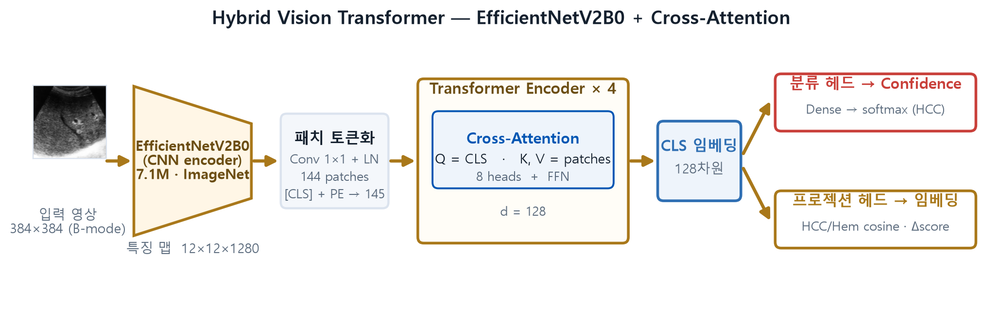
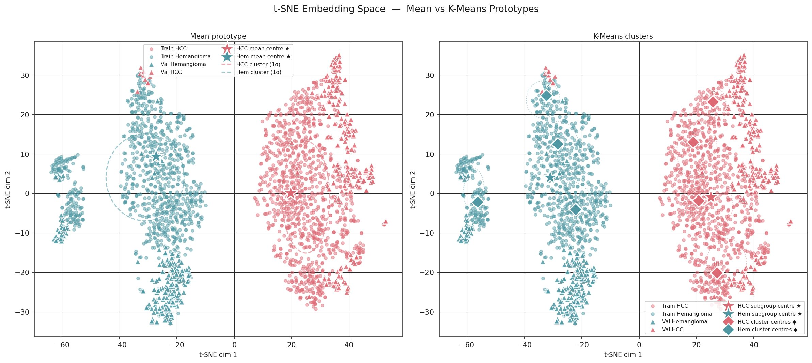

AI가 예측한 간암,
을 넘어 유사도 점수까지
B-mode 복부 초음파에서 간세포암과 간혈관종 감별을 위한 딥러닝 모델의 Confidence Score와 임베딩 기반 유사도 점수: 단일기관 공개 데이터셋을 이용한 탐색적 연구
What is your diagnosis?


모두 B-mode 복부 초음파 — 에코·경계·후방음영을 보고 판단해 보자.
모두 간암(HCC) — 혈관종처럼 보이지만 실제로는 HCC일 수 있다
초음파는 접근성이 좋지만, B-mode 단독으로는 부족하다
1. 접근성
B-mode 초음파는 비침습·저렴·즉시 가능한 1차 영상 도구
2. 그러나 B-mode 단독 (ML 없이)
양/악성 감별 — 정확도 76.0% · 민감도 76.1% · 특이도 76.9%
(15년 경력 판독자 236명)
3. 최근 AI
AUC 0.924 · 정확도 84.7% · 민감도 86.5%
(조영증강 CT 84.7% · MRI 87.9%)
그래서 실제로는 조영증강 CT/MRI/CEUS를 쓰고, 최근에는 AI를 보조로 쓴다. (meta-analysis: 비조영 US ML 민감도 81.7%·특이도 84.8%)
Yang Q, et al. EBioMedicine 2020 [9] · Campello 2023 [18] · Tak 2026 [13]
스펙트럼으로 나타나고, 현행 AI는 softmax를 확률로 본다
- HCC·hemangioma 모두 전형–비전형 스펙트럼 → hemangioma처럼 보여도 추가 평가(further evaluation)가 필요
- CT·MR이 좋은 방법이고, 최근에는 AI를 사용 — 그러나
- 현행 AI의 문제는 softmax를 확률로 취급하는 것
softmax는 과잉확신(overconfidence) 경향이 있고, softmax 값이 실제 분류 정확도(확률)와 일치하지 않는다. → softmax는 확률이 아니라 '결정 강도'로 보아야 한다.
Guo 2017 [11] (calibration of modern neural networks)
영상 → 인코더 → 숫자의 나열 → 초구면 위의 점
영상은 인코더를 거쳐 숫자의 나열(벡터)이 되고, 정규화하면 초구면 위 한 점이 된다. 비슷한 병변일수록 각도(cosine)가 작다. (▲ 반복 재생)
prototype 계산 → cosine score · Δscore
클래스 임베딩의 평균 = prototype. 병변 z와 두 prototype의 각도로 HCC cosine·혈관종 cosine을, 그 차이로 Δscore를 구한다. (▲ 벡터가 왕복)
Hybrid ViT — CNN 인코더 + Cross-Attention

EfficientNetV2B0(CNN) → 토큰화 → Transformer Encoder ×4. Cross-Attention(Q=CLS, K=V=패치). 하나의 CLS 임베딩에서 분류 헤드(confidence)와 프로젝션 헤드(cosine)를 동시 산출.
인코더 내부 — 필터가 훑고, CLS가 패치를 본다
합성곱은 국소 패턴(에코·경계)을, Cross-Attention은 패치 사이의 전역 맥락을 담는다. 진단에 쓰이는 것은 이 CLS 임베딩 하나이며, 다음 슬라이드의 세 지표가 여기서 나온다.
데이터 — SMC-LUD clean subset
- HCC 1,389장 · 혈관종 1,267장
- 환자 단위 분할로 누출 차단
- 단, 한 환자에서 한 영상만 쓰지는 못함 (환자당 평균 3.57장)
Table 1B. Clean subset 배분
| 환자 | 영상 | Train | Val | Test | |
|---|---|---|---|---|---|
| 혈관종 | 323 | 1,267 | 886 | 253 | 128 |
| HCC | 421 | 1,389 | 972 | 277 | 140 |
| 합계 | 744 | 2,656 | 1,858 | 530 | 268 |
HCC는 병리확진, 혈관종은 영상 판독(radiology report)으로 라벨.
CE with Supervised Contrastive Learning
분류 경계만 형성
임베딩 응집·분리
SSL 사전학습 검증
384×384 · AdamW · Cosine Annealing. 임계값은 검증 세트에서만 Youden's J → 테스트 고정. 통계: DeLong [15] · 영상 단위 95% CI · 대응 t/Wilcoxon/Pitman-Morgan. (▲ 점이 흩날릴수록 군집이 불안정)
SupCon은 점을 움직이고, CE는 경계만 움직인다 (batch 4)
같은 클래스(H1·H2 · V1·V2)는 임베딩에서 가깝게(pull), 다른 클래스는 멀게(push). 분류 헤드의 CE는 각 케이스의 정답 클래스 확률을 높인다. (▲ 좌: 점이 이동 / 우: 경계만 이동)
정렬되면 SupCon loss가 0으로 떨어진다 (batch = 4)
anchor마다 positive는 분자, 자기를 제외한 전체는 분모. 정렬 전에는 negative가 weight를 독차지해 loss가 크고, 정렬되면 positive가 1.000을 차지해 loss → 0. batch=4면 anchor 4개의 loss 평균이 SupCon loss가 된다. (▲ loss 감소)
하나의 병변에서 세 가지 출력
실제 영상이 인코더로 들어가 숫자 벡터가 되고, 그 벡터가 세 지표로 분기해 각 지표의 점(point)이 된다. Confidence(결정 강도) · HCC cosine(전형 소견과의 닮음) · Δscore(어느 쪽에 가까운가). prototype은 훈련 세트에서만 산출. (▲ 이미지가 흘러 들어가 점 3개로)
테스트 세트 — 위음성 0건, 위양성 1건
혼동행렬 (Test, n=268)
| 예측 혈관종 | 예측 HCC | |
|---|---|---|
| 실제 혈관종 | TN 127 | FP 1 |
| 실제 HCC | FN 0 | TP 140 |
세 출력 모두 동일 — 증분 이득은 확인되지 않음.

동일 test split 선행 baseline 98.88% [13] vs 본 연구 99.63% (내부 검증).
세 출력 모두 AUROC 1.000 — 단, 천장효과 주의

| 출력 | AUROC | DeLong p |
|---|---|---|
| ① Confidence | 1.000 | — 기준 |
| ② HCC cosine | 1.000 | 1.000 (ns) |
| ③ Δscore | 1.000 | 1.000 (ns) |
| ②③ k=4 | 1.000 | 1.000 (ns) |
천장효과 ▸ AUROC 1.000에서는 DeLong 검정력이 제한되어 비열등성을 단정할 수 없고, 5개 출력이 같은 1건만 오분류 → cosine의 독자적 이득은 미입증.
SupCon이 cosine score를 "의미 있는 지표"로 만든다


- 목적은 성능 개선이 아니라 해석 — "얼마나 HCC스러운가"의 정량 지표
- SupCon 전: HCC인데도 cosine이 0~1에 넓게 퍼짐 → radiologic marker로 기능 못 함
- SupCon 후: 0.9 근처로 밀집 → score가 높을수록 HCC 가능성↑ (혈관종도 동일)
- confidence는 HCC 확률로 직접 해석되지 않아 이를 보완하는 지표
HCC 0.882→0.970 (분산 −60.7%) | Hemangioma 0.955→0.985 (−98.7%), p<0.001
정리 및 남은 과제
- softmax를 결정 강도로 재정의
- cosine score = "얼마나 HCC스러운가"의 정량 보조지표
- SupCon 후 score가 밀집 → 높을수록 HCC 가능성↑로 해석 가능
한계
- 단일기관 — 외부 검증 부재
- 배경 간질환·AFP 정보 부재
- 환자 내 상관성 미보정 · spectrum bias
- 천장효과로 이득 구분 불가
B-mode 초음파에서 confidence와 임베딩 유사도(HCC cosine·Δscore)를 함께 내는 이중 출력의 산출 가능성을 제시한 탐색적 연구. 실제 임상적 유용성은 다기관 외부 검증으로 평가되어야 한다.
감사합니다
질문과 토론을 환영합니다.